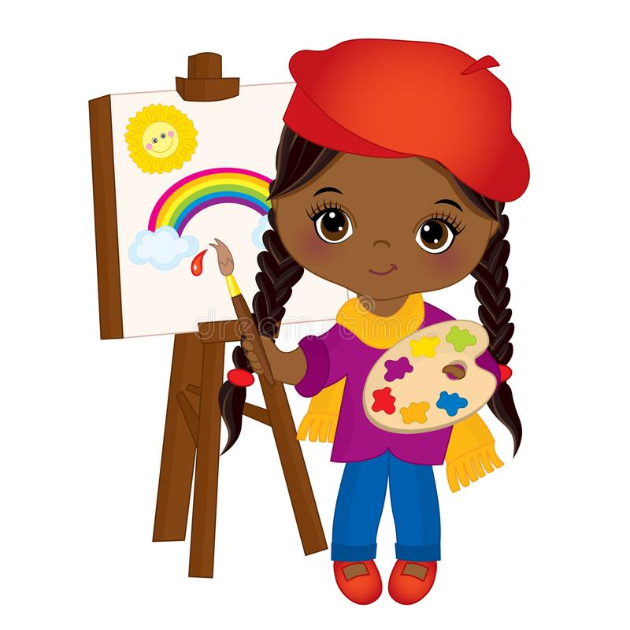

Hello and welcome! This is a story of the Mid Autumn Bloom. Born in warm mid November, Bloom was made to be an early bloomer.
The Caribbean
 Growing up, she learned very quickly and mastered the visual and performing arts.
She would re-create images of her favourite comic characters, and drum up fictiscious characters from her vivid and wide child-like imagination.
Travelling is a favourite hobby of Bloom's, meeting new people and learning about new cultures. So far, she has lived and worked in three countries.